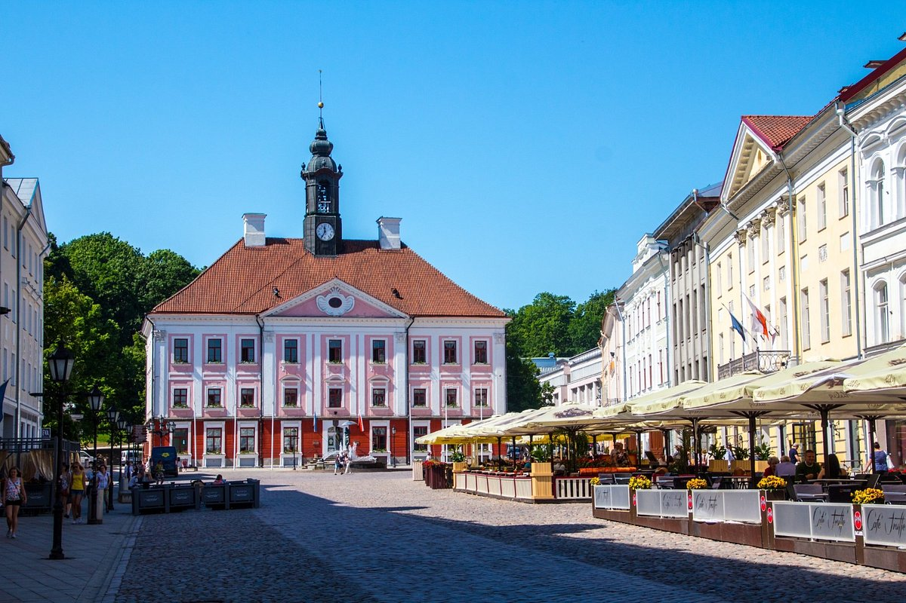

oct 22, 2022

Tartu, Estonia's second-largest city with a population of 97,435 as of 2023, is known for its historical significance. It sits on the Emajõgi river, linking Lake Võrtsjärv and Lake Peipus. Tartu is renowned as the "intellectual capital" due to its University of Tartu, established in 1632. It's also home to the Supreme Court, Ministry of Education and Research, Estonian National Museum, and Vanemuine, the oldest Estonian-language theatre. Tartu is set to become the European Capital of Culture in 2024.